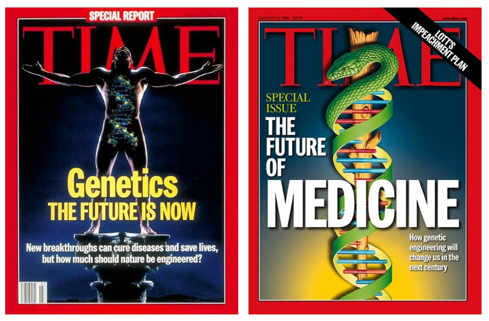
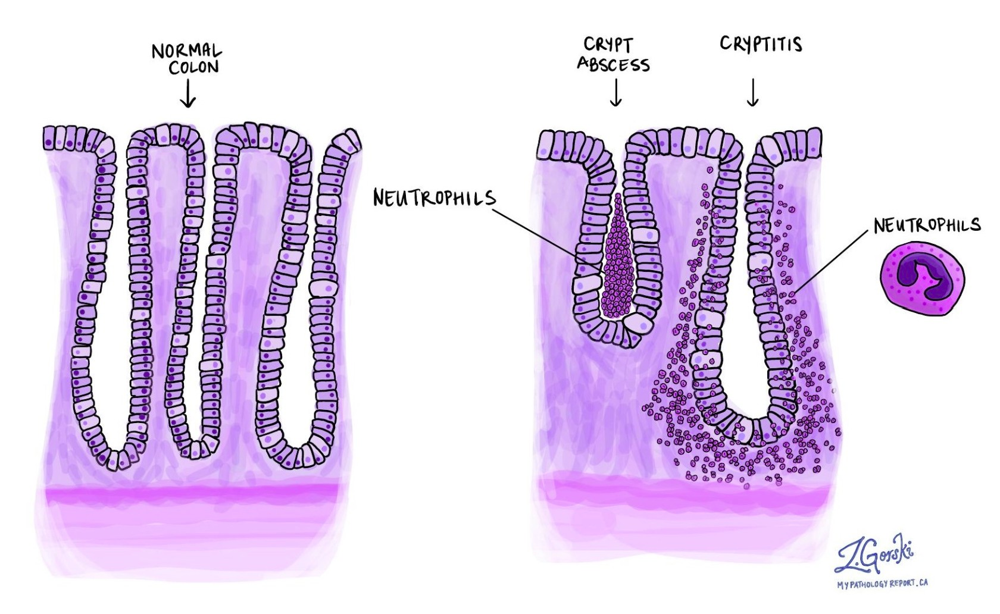
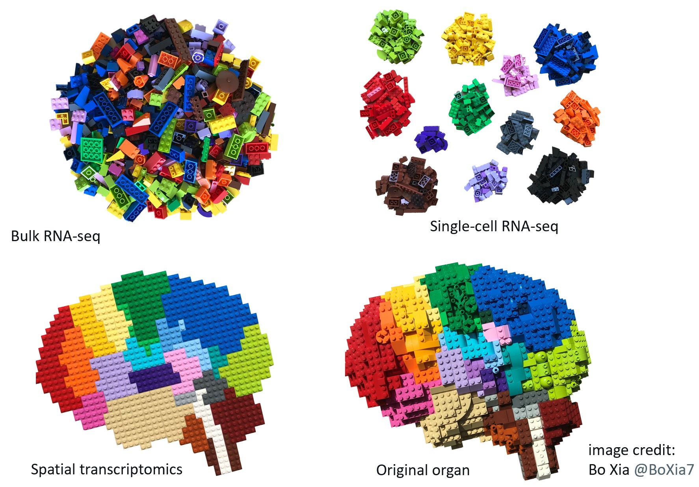
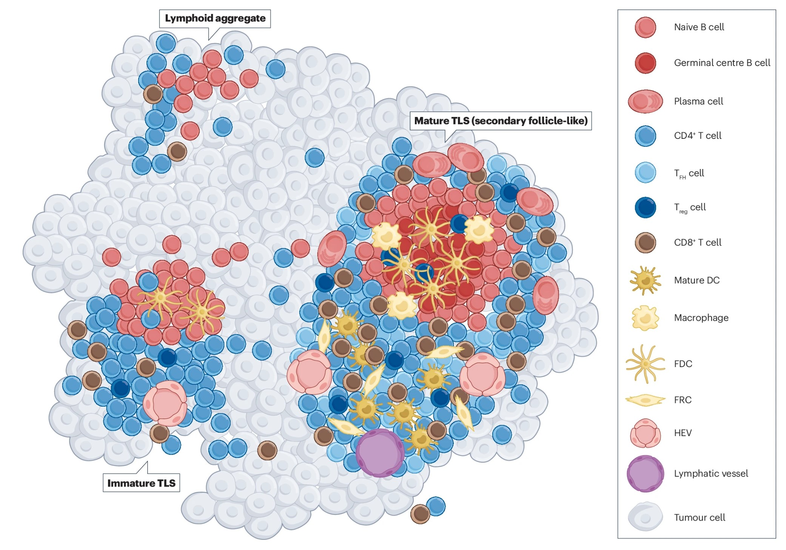
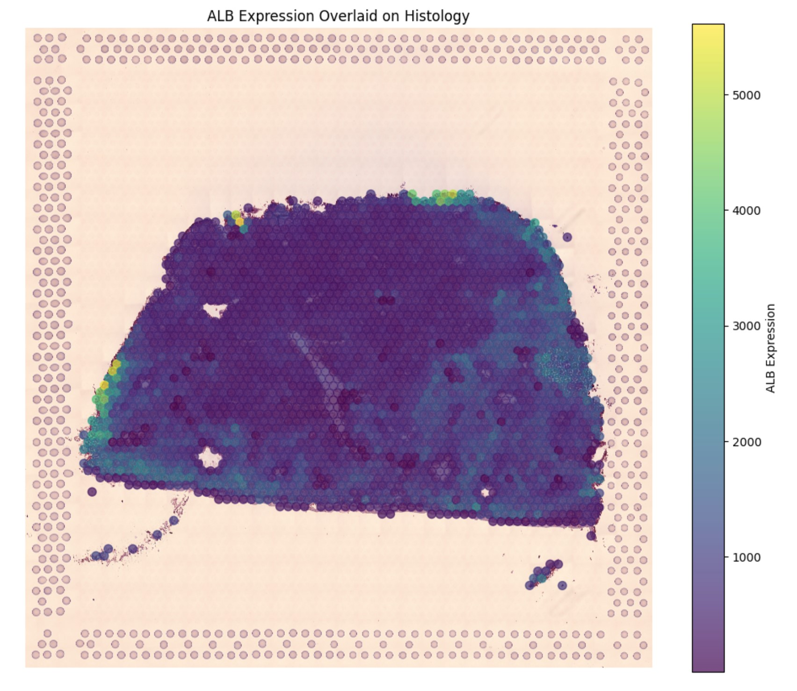
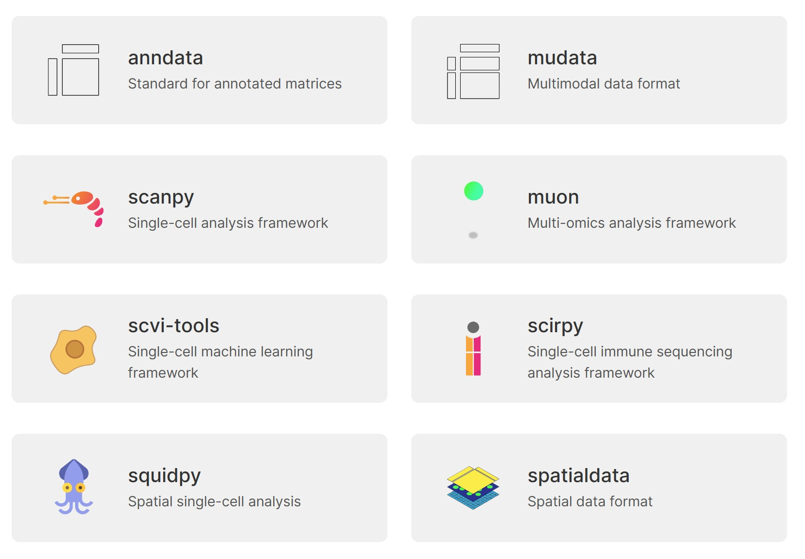

DNA sequencing hasn’t lived up to the hype
Twenty to thirty years ago, politicians, scientific leaders, journalists, and even Nobel laureates predicted that sequencing the human genome would revolutionize how we treat disease. And while the advances in DNA sequencing that have occurred since then have improved recognition and treatment for some cancers and rare diseases, on the whole the field has not lived up to earlier hype.

In an article titled “Why sequencing the human genome failed to produce big breakthroughs in disease”, a biology professor highlights that most common diseases are not caused by a single gene. In fact, common diseases are often linked to hundreds of gene variants, and even collectively, these variants still account for only a small fraction of disease variance. Here, I want to focus on two other key limitations of DNA sequencing, and how they are now being addressed with new approaches.
What DNA can’t tell us
First, DNA can’t answer many questions about how cells and organisms work in practice. A neuron in the brain has the same DNA as a liver cell, yet the two have completely different functions. This is because different segments of DNA are turned off or on in different cells. To understand how cells are actually working, you need to know about proteins and RNA (RNA is the intermediary which translates DNA into protein). Proteins are what build the structure of cells, catalyze chemical reactions within the cell, and allow communication between cells. Healthy and unhealthy cells in the same organism will usually have the same DNA. For instance, if some regions of the intestines are experiencing an IBD (irritable bowel disease) flare and others aren’t, they would all have the same DNA, yet likely different RNA and protein levels.
A second big problem is that many key sequencing techniques destroy spatial information. You essentially may have to put tissue or cells into a blender in order to get rich information about DNA or RNA sequences. While this data is informative, it turns out that locations of cells within a piece of tissue, and locations of regions within a cell, are also very important! Again, considering the case in which some regions of the intestine are inflamed due to IBD, yet others aren’t, mixing them all together in a blender will lose or distort useful information. Look at the difference between crypts in a healthy segment of the colon (on the left) compared to inflamed crypts (on the right).

Recently, we have seen a rise in breakthroughs that allow us to obtain data about location. Spatial techniques are a necessary and exciting step beyond DNA sequencing. The power of spatial information showed up as a major theme at a conference I attended last year, and spatial techniques have been recognized by Nature Methods as “Method of the year” twice in the last 5 years.
A Few Major Areas of Innovation
What is genetic sequencing anyway? There are a number of different types of sequencing that have been invented in the last 30 years. Walking through a brief history will illustrate what these technologies are, and what they can and cannot do. To make it concrete, let’s look at the example of how they have been applied to cancer treatment.
Sanger Sequencing: This is an older technology dating back to the 1970s, and which was the main way of sequencing DNA up until 2005. Sanger sequencing was one of the methods used in the mid-90s to identify the genes BRCA1 and BRCA2 as key genetic risk factors for breast cancer. The process of discovering BRCA1/BRCA2 involved scientists slowly zeroing in on their chromosomal locations over a period of years. Several other cancer genes were discovered during this time period as well. While Sanger sequencing is effective on smaller amounts of DNA, it can be quite slow to deal with larger volumes. It took over 10 years to sequence the first copy of the human genome using Sanger Sequencing. It is still used today as a simple and reliable way to test for known mutations (such as BRCA1/BRCA2) or for smaller tasks.
High-Throughput Sequencing: New technology released in the mid-2000s allowed DNA to be cut into lots of short pieces and for millions of pieces to be sequenced in parallel at once. This approach, called high-throughput sequencing, was significantly faster than Sanger sequencing. High-throughput sequencing has many applications, including to cancer treatment, by making it cheaper and faster to sequence DNA to identify particular mutations which can influence treatment decisions. Method of the Year | Nature Methods
Long-read sequencing: High-throughput sequencing has the advantage of high accuracy, but the downside of short sequence lengths. In the 2010s, technologies were released with the opposite set of strengths and weaknesses. Long-read sequencing provides the advantage of long sequence lengths, although the downside of lower accuracy. To compare, high-throughput sequencing uses DNA strands that are a few hundred base pairs long, whereas long-read sequencing uses DNA strands that are tens of thousands base pairs long. Both technologies have different strengths and are widely used today.
Single-Cell Sequencing: High-throughput sequencing involves sequencing the DNA of many cells at once, but sometimes it is useful to sequence individual cells. In a tumor, different cells can have different mutations. It is possible that a small subset of the mutations may drive metastasis (the spread of cancer to other areas) or resistance to treatment. Identifying these driver mutations can guide treatment decisions, since particular driver mutations can predict the effectiveness of various drugs. Key mutations may be drowned out in the average if you sequence the entire tumor. This is one reason why it is useful to be able to sequence single cells, and not just obtain the average of many cells. Single-cell sequencing was selected as Nature Methods method of the year in 2013.

Multi-Omics: The study of DNA is genomics. DNA alone gives us an incomplete picture of an organism. Epigenomics can provide information about which regions of DNA are active or silenced. To understand how different cells function, as well as cells in different states of disease or health, you also need to know about their RNA and proteins. This data is contained in the field of transcriptomics (transcripts are strands of RNA transcribed from DNA) and proteomics (the proteins in a cell). Metabolomics looks at small molecules (such as sugars, amino acids, and vitamins) within the body and exposomics includes all sorts of environmental exposures. Collectively, these fields are known as -omics or multi-omics. It is valuable to combine multiple types of -omics together for richer sources of information, since each has different strengths, limitations, and insights to offer. Multi-Omics is an exciting area that draws on lots of data, with applications to cancer, infectious disease and immunology.
Spatial: Spatial information lets us see all the variation within a section of the body– such as a segment of the intestines, the liver, or a cancerous tumor. This variation can often be significant for understanding disease and treatment prognosis. To better understand why spatial techniques are useful, let us dive into some background about cancer.
Tumors aren’t just lumps of bad cells
Cancer is defined as excess cell division. I used to think that tumors were just clumps of “bad cells”, where “good” and “bad” were binary states. This is incorrect. Tumors are not uniform, and within the category of “bad” there is a great deal of variation and heterogeneity. Different cells within a tumor may have different mutations from one another. And our immune systems sometimes build complex defense structures within tumors in attempts to more effectively fight them. How close a cancerous cell is to one of these immune structures impacts how likely the body is to destroy the cancerous cell.

Immunologist Dr. Angela Ferguson, who studies head and neck cancers, describes tumors as having a “physical landscape”. She has shown how the organization and structure within a tumor can predict and guide treatment outcomes. Her work found that cancer progression is “landscape-dependent”, where landscape refers to the locations of immune cells and structures within a tumor. It is not enough to study cancer cells in isolation. We need to understand their layout. Methods that effectively put tumor cells into a blender in order to sequence them, disrupting their spatial information, are insufficient on their own. Mapping that spatial information can hold the keys for more effective treatment.
Single cell sequencing approaches allow a greater number of genes to be measured, whereas spatial approaches measure fewer genes but also provide location information. Combining these two approaches can prove powerful.
Programming Libraries Applied to Spatial -Omics
We are living at a time when multi-omics, spatial information, and user-friendly programming libraries are converging for easier exploration and discovery. For instance, below is an image I created using the common Python programming libraries pandas and matplotlib of data the NIH has shared about a rare liver disease. The image shows a slice of liver tissue, with gene expression overlaid in a color scale ranging from purple (low expression) to yellow (highest expression).

The NIH dataset contain images of slices of liver and expression of many different genes, from both healthy patients and those with a rare liver disease. https://www.ncbi.nlm.nih.gov/geo/query/acc.cgi?acc=GSE240429. The plot shows expression of albumin, a protein which helps transport other molecules around the body, overlaid on top of the liver, illustrating which regions produce more or less of this protein. Data science tools are invaluable for transforming and plotting such data.
In addition to being able to use standard Python libraries (such as Pandas and Matplotlib) for visualing this data, there are many specialist libraries as well. The Scverse (Sc = single cell) includes a number of Python libraries focused on single cell analysis.

There are also popular R libraries for single cell analysis and multi-omics, such as Harmony, Seurat, and mixOmics.
With all of these tools and technologies, it is an exciting time to be working at the intersection of data science and microbiology. The causes of most diseases are complex and multi-factorial, although new approaches of spatial multi-omics provide unprecedented types of useful information.
I look forward to reading your responses. Create a free GitHub account to comment below.